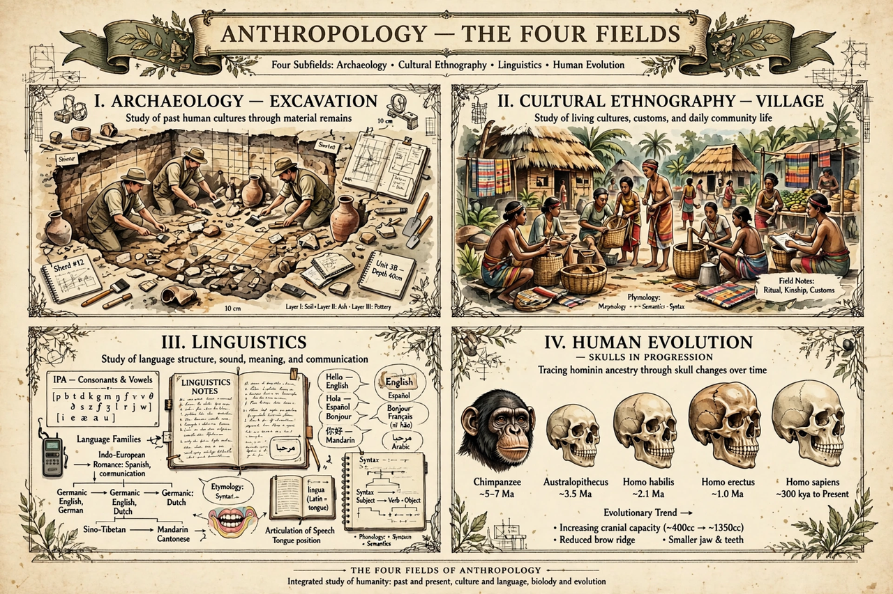

Anthropology is the scientific study of humanity — human behaviour, biology, societies, cultures and languages, in the present and past. Its holistic, comparative approach distinguishes it from neighbouring disciplines.

In the American tradition shaped by Franz Boas: cultural (social) anthropology — ethnography of living societies; biological / physical anthropology — human evolution and variation; linguistic anthropology; and archaeology. British social anthropology emphasised social structure.
Participant observation, pioneered by Bronisław Malinowski in the Trobriand Islands, is central to ethnography. The field grappled with colonial origins and early race science, including figures such as Robert Yerkes in psychology, moving toward cultural relativism.
Applied anthropology works in development, health, business, forensics and heritage.